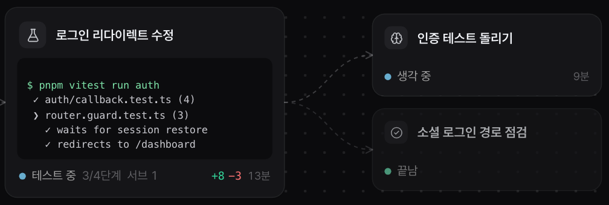
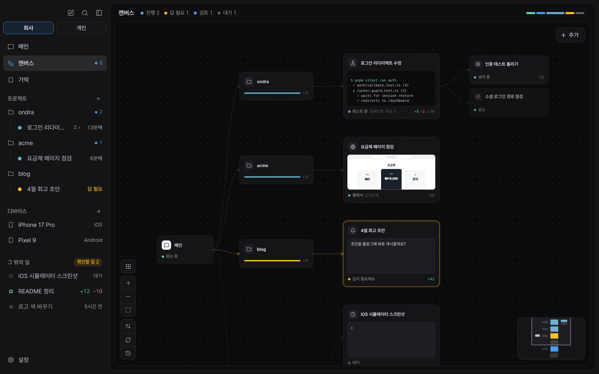
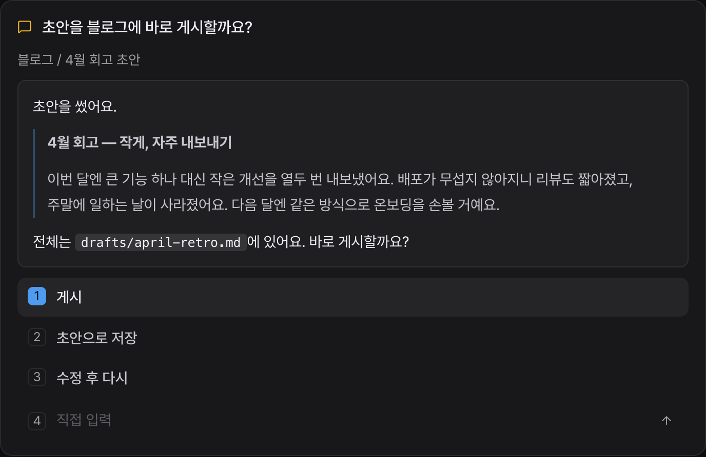

어느 탭이 무슨 일을 하던 중인지, 머릿속으로 붙잡고 있었죠.
말은 메인에게 한 번.
흐름은 캔버스에서 봐요.
- 여러 일을 한 번에 적어도 돼요. 메인이 작업으로 나눠 동시에 진행해요.
- 작업마다 세션이 따로라 서로 섞이지 않아요. 원하면 작업마다 git 워크트리도 따로 써요.
- 캔버스는 메인부터 프로젝트, 작업, 서브에이전트까지 선으로 이어서, 각 작업이 지금 무슨 도구를 쓰는지 보여줘요.


채팅 하나에 하고 싶은 일을 말해요. Ondra가 작업으로 나눠 동시에 진행하고, 정해야 할 일이 있을 때만 불러요.

“다 했어요”라는데, 정말 됐는지는 결국 직접 열어 봤죠.
작업이 끝나면 Ondra가 실제로 돌린 명령과 바뀐 파일을 기록과 맞춰 봐요. 확인 못 한 건 확인 못 했다고 표시해요.

어느 탭이 무슨 일을 하던 중인지, 머릿속으로 붙잡고 있었죠.

어느 탭이 내 대답을 기다리는지 몰라서, 하나씩 열어 봤죠.
의도나 취향이 필요한 순간에만, 선택지와 맥락을 담은 카드가 메인에 올라와요.

새 세션을 열 때마다 같은 배경을 처음부터 다시 설명했죠.
긴 작업은 한 일, 발견한 것, 다음 단계와 증거를 새 세션에 넘겨요. 끝난 작업에 더 요청해도 앞선 결과를 이어받아요.
쓰면서 알게 된 취향과 교훈을 메모리에 남겨요. /remember로 바로 남기고, 메모리 화면에서 보고 고쳐요.
프로젝트마다 채팅을 따로 둬요. 거기서 맡긴 작업은 그 폴더에서 시작해요.
매일 아침 같은 일을 또 시키고, CI가 깨진 건 한참 뒤에 알았죠.
매일, 요일마다, N분마다, 또는 한 번. 정한 때가 되면 작업을 알아서 시작해요.
새 이슈나 PR, 리뷰 요청, 내 PR의 댓글, CI 실패, 새 릴리스가 생기면 시작해요.
“평일 9시마다 …”라고 하면 루틴을 카드로 제안해요. Mac이 잠든 사이 놓친 실행은 깨어나서 한 번만 돌아요.
노트북을 덮으면 에이전트도 같이 멈췄죠.
책상 위의 다른 Mac을 연결하면, 그 Mac의 프로젝트가 내 목록에 그대로 보여요. 작업은 그 Mac에서 돌아가니, 노트북을 덮어도 그 Mac의 작업은 계속돼요.
코드는 고쳤다는데, 화면은 결국 내가 열어서 확인했죠.
작업마다 자기 탭에서 웹을 보고 조작해요. 비밀번호는 macOS 키체인으로 입력해서 모델에 보이지 않아요.
권한을 허용하면 Mac 앱을 조작하고, 그 앱의 창을 캡처해 결과를 확인해요.
iOS 시뮬레이터와 Android 에뮬레이터에서 앱을 확인하고 화면을 남겨요. Ondra 안에서 직접 조작할 수도 있어요.
질문을 나눠 출처를 조사하고, 인용을 원문과 대조해요. 답과 근거를 보고서와 PDF로 모아요.
네, 지금은 무료 베타예요. 새 버전이 나오면 앱 안에서 알려줘요.
Apple silicon Mac과 macOS 13 이상이 필요해요. 처음 열면 설정에서 쓰고 있는 AI 모델 계정을 연결해요. Mac 앱 조작과 화면 캡처에는 손쉬운 사용과 화면 기록 권한이, 모바일 확인에는 Xcode의 iOS 시뮬레이터나 Android 에뮬레이터가 필요해요.
내 Mac에서 돌아가요. 다른 Mac을 연결했다면, 그 Mac의 프로젝트 작업은 그 Mac에서 돌아가요. 익명 사용 통계는 설정에서 끌 수 있어요.
Finder에서 앱을 오른쪽 클릭하고 열기를 골라요. 그래도 막히면, GitHub 릴리스에서 받은 앱인지 확인한 뒤 터미널에서 xattr -dr com.apple.quarantine /Applications/Ondra.app를 한 번 실행해요.